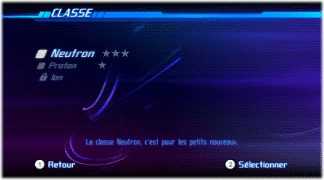
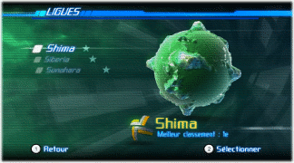
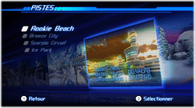

La classe définit la difficulté générale des pistes dans une ligue. Plus la classe est élevée, plus il faudra faire preuve de réflexes et plus les pilotes contrôlés par l'IA seront agressifs. Au départ, tu ne pourras sélectionné qu'une seule classe. Deux classes de plus peuvent être déverrouillées en te classant parmi les trois meilleurs pilotes dans les trois ligues de la classe précédente.

Il y a trois ligues, chacune composée de quatre pistes uniques. Chaque ligue représente un certain niveau de difficulté, Shima étant la plus simple et Sunahara la plus difficile.

Dans le mode FAST Records, tu peux désormais sélectionner la piste sur laquelle tu veux courir. Tes statistiques de tour, de position et d'arrivée pour la piste sélectionnée s'affichent dans le coin inférieur gauche.